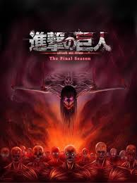

Assalamualaikum w.b jadi di sini saya akan menceritakan hal favorit saya yaitu menonton anime yang bernama attack on titan seperti juduk di atas.
Pada awal 2019saya memulai menonton attack on titan pada season 1 episode 1 di situ saya menonton bareng dengan om saya sebelum om saya memulai karir nya menjadi seorang guru saya sangat sering nonton dengan om saya hingga lupa waktu.
2020 di situ saya telah menonton hingga season 3 pada awalnya lancar-lancar saja hingga pada akhirnya mau ke season 4(final season) saya harus menunggu 1 tahun untuk rilis season 4 nya.
Pada awal 2021 di situ saya tinggal menunggu beberapa bulan lagi hingga akhirnya rilis setelah rilis itu hanya beberapa episode yang pada akhirnya harus menunggu season baru yaitu final season itu juga part 1 mesti nunggu 1 tahun.

2022 pada tahun itu saya bisa menonton final season part 1 awalnya saya tidak tahu kalau ada lanjutan juga part ke 2 nya "hheehehe seperti di tiktok-tiktok ada partnya eh eh lanjut" cerita pada faktanya seperti itu ada partnya jadi setelah saya menonton attack on titan tersebut saya kaget karena malihat masih ada lanjutan nya di situ saya sedih dan saya mencari tahu kapan rilisnya ternyata 2023.
Pada bulan november 2023 hari dimana attack on titan resmi tamat di situ saya menontonnya hingga terharu dan menangis karena anime tersebut yang membuat saya percaya diri dan lain lain,di anime tersebut juga ada karakter yang saya sukai yaitu mikasa acerman dia adalah sosok wanita tangguh dan pemberani dia juga memiliki rasa cinta terhadap eren karena eren akan memusnakan seluruh dunia oleh karena itu mikasa harus membunuh nya sebelum seluruh dunia hancur.